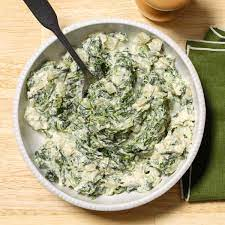

Creamed Spinach

This is Kenji's scientific approach to the world's greatest Creamed Spinach. Enjoy!
Ingredients
- 3 tbs unsalted butter
- 2 shallots finely minced
- 2 cloves garlic minced
- 2 pounds spinach
- 1 tbs flour
- 1 1/2 cups heavy cream
- 1/2 cup whole milk
- 1/4 tsp nutmeg
- 1/4 cup creme fraiche
- Kosher Salt and Fresh Ground Pepper
- 2 ounces Parmigiano-Reggiano
Steps
- Melt Butter in Dutch oven. Add shallots and garlic. Add spinach.
- Add flour and cook. Stir in heavy cream and milk. Bring to simmer then reduce heat. Stir occasionally until thick, around 1.5 hours.
- Stir in nutmeg and creme fraiche. Remove from heat.
- Transfer to casrole dish, top with cheese, and broil for 2 min. Serve